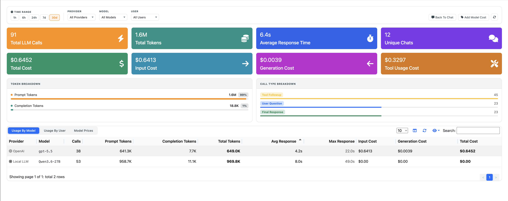
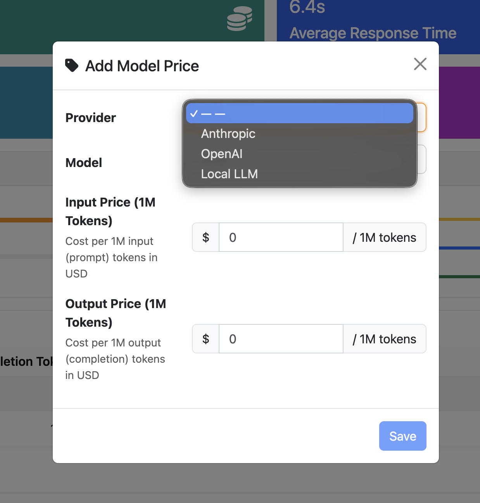

Статистика использования
nAnalyst обеспечивает встроенную видимость использования LLM — как с точки зрения потребления токенов, так и с точки зрения стоимости в долларах — с разбивкой по пользователю, модели и типу операции.
Почему отслеживание использования важно
Инструменты на базе LLM могут привести к неожиданным затратам в больших масштабах. nAnalyst делает затраты видимыми и относящимися к ним с первого дня, чтобы команды могли:
Бюджет на расследования при содействии AI
Выявление активных пользователей или дорогостоящих шаблонов запросов
Сравните стоимость разных моделей LLM
Продемонстрируйте окупаемость инвестиций, сопоставляя использование с решенными инцидентами.
Панель управления использованием
На странице статистики использования показано:
Разбивка токенов
Общее количество входных и выходных токенов за выбранный диапазон времени
Потребление токенов на пользователя
Потребление токенов по модели LLM
Разбивка по типу операции: выполнение вызова инструмента, генерация ответа, управление контекстом.
Отслеживание затрат
Стоимость в долларах за сеанс, в день, за пользователя
Стоимость за модель (см. конфигурацию стоимости модели ниже)
Совокупные расходы за определенный период

Статистика использования аналитиков
Стоимость модели можно добавить, нажав на правую часть «Добавить стоимость модели»:

nAnalyst Добавить LLM Стоимость модели
Конфигурация стоимости модели
nAnalyst позволяет настроить цену для любой модели:
Перейдите в настройки nAnalyst → Стоимость модели.
Выберите существующую модель или введите новое название модели.
Введите входную и выходную цену за 1 миллион токенов.
Затраты применяются задним числом к отображению исторического использования.
Это обеспечивает точный учет затрат для:
Облачные API с оплатой по факту использования (Anthropic, OpenAI)
AWS Цена за токен
Локальные серверы вывода (установите стоимость на zero или на расчетную оценку стоимости)
Интерпретация данных
Каждая строка в разбивке по использованию соответствует одному сеансу nAnalyst. В столбцах показано:
Пользователь — пользователь ntopng, инициировавший сеанс
Модель — использованная модель LLM
Входные токены — токены, отправленные в модель (вопросы + результаты инструмента + контекст)
Выходные токены — токены, генерируемые моделью (рассуждения + ответы)
Вызовы инструментов — количество вызовов предметных инструментов в сеансе.
Расходы — расчетная стоимость в долларах на основе настроенной цены модели.
Временная метка — время начала сеанса